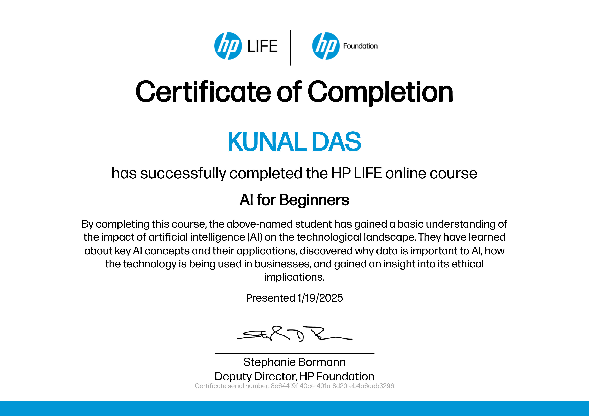

Motivated Junior Python Developer and Final-Year Electronics and Telecommunication Engineering Student
I am a passionate and motivated junior Python developer currently in my final year of pursuing a Bachelor's degree in Electronics and Telecommunication Engineering. My academic and practical experience has allowed me to develop a strong foundation in both software and hardware development, particularly in backend programming using Python and MySQL, as well as in designing and implementing embedded systems using microcontrollers.
Throughout my academic journey, I have developed a deep interest in combining electronics with software development to create efficient, real-world solutions. I am especially enthusiastic about embedded systems, sensor integration, and Internet of Things (IoT) applications. I have worked extensively with microcontrollers such as Arduino and ESP32, alongside various sensors and modules, to create systems that interact intelligently with their environment.
My software skills are centered around Python, which I use for backend development, automation, data handling, and integrating APIs with hardware systems. My backend development experience includes designing and implementing structured databases with MySQL, building RESTful APIs, and using frameworks like Flask to create web services. I have a strong grasp of data flow, system architecture, and scalable development practices.
My journey into programming started from a desire to understand the logic behind system automation and control. I quickly gravitated towards Python for its simplicity and power, and over time, I became confident in using it not only for typical backend tasks but also for tasks involving hardware communication, GUI applications, and API integrations. I enjoy writing clean, modular code and organizing systems in a way that ensures maintainability and scalability.
In the area of microcontroller programming, I enjoy writing embedded C and Arduino-compatible code to control sensors, actuators, and communication modules. I have built various hardware-based systems that collect data, process it in real time, and respond with meaningful actions. This includes everything from basic sensor monitoring to more complex systems involving conditional logic, alert mechanisms, and cloud/API integration.
What sets me apart is my ability to bridge the gap between hardware and software. I not only understand how electronic components behave in real circuits but also how to write software that interprets, controls, or augments these behaviors. This dual understanding enables me to build holistic solutions where hardware and software operate in harmony, especially in fields like home automation, safety systems, and monitoring applications.
Beyond technical skills, I am a keen problem solver with a strong analytical mindset. I approach every challenge with curiosity and persistence, breaking down problems methodically and learning what’s necessary to find effective solutions. I have also honed my ability to work collaboratively in team settings, communicate technical concepts clearly, and adapt to evolving project requirements.
I consistently stay up to date with advancements in technology, particularly in the domains of IoT, embedded development, and backend systems. I am also familiar with basic circuit simulation and PCB design tools, which help in taking prototypes from breadboard setups to more robust and organized implementations.
As a final-year engineering student, I bring with me a combination of theoretical knowledge and practical hands-on experience. I have developed time management, project planning, and execution skills by balancing academic responsibilities with self-initiated technical projects. My goal is to join a forward-thinking organization where I can contribute to building impactful technological solutions by combining software with electronics.
In the future, I see myself growing in roles that allow me to work at the intersection of embedded systems and software engineering. I am particularly interested in smart devices, robotics, industrial automation, and intelligent sensing systems. I am committed to lifelong learning and am open to exploring new tools, languages, and frameworks that help me become a more versatile and effective engineer.
In summary, I bring a unique blend of backend development experience, hardware knowledge, and a deep passion for solving real-world problems through technology. With a strong foundation in Python, microcontroller programming, and a mindset geared toward innovation, I aim to create systems that are intelligent, reliable, and meaningful in everyday life.
C, Python, MySQL, HTML, CSS, JavaScript, OOP, PyWebView
Git (Version Control), GitHub, MATLAB, MS Office, Proteus, ChatGPT & AI Tools
Arduino, ESP32, Ultrasonic Sensors, IR Sensors, GPS, GSM, Circuit Design, Schematic Debugging, PCB Prototyping
Team Leadership, Problem Solving, Communication, Project Management
Falakata Polytechnic, Government of West Bengal
Avg. GPA (till 5th Sem): 9
Avg. Percentage (till 5th Sem): 87.12%
University of North Bengal | GPA: 7.18
Subjects: Physics, Chemistry, Mathematics
West Bengal Council of Higher Secondary Education
Percentage: 57.4%
West Bengal Board of Secondary Education
Percentage: 66.6%
-1.jpg)
Computer Diploma in Information Technology Application (2018–2019)
-2.jpg)
Computer Diploma in Financial Accounting System (2021–2022)

Employability Skills – JobReady Certificate, Wadhwani Foundation

AI for Beginners Certificate, HP LIFE

Generative AI for Educators Certificate, Google & MIT RAISE

Lean Startup Methodology Certificate, NPTEL+
Role: Team Leader, Backend & Database Programmer
Technologies: Python, PyWebView, MySQL
Role: Team Leader, Circuit Designer, Embedded Programmer
Team Members: Kunal Das, Arindam Das, Nirmal Barman, Chanchal Mandal, Bivash Das, Shilajit Paul, Raj Barman
Guide: Mr. Lakhan Deo Oraon, Lecturer, Department of ETCE, Falakata Polytechnic
Institution: Falakata Polytechnic, West Bengal State Council of Technical & Vocational Education and Skill Development
Technologies Used: ESP32 microcontroller, GPS Module (NEO-6M), GSM Module (SIM900A), MQ3 Alcohol Sensor, Ultrasonic Sensor, MPU6050 Accelerometer, PIR Sensor, OLED Display, TP4056 Battery Charger, L293D Motor Driver, Voltage Regulators, Arduino IDE
Email: kunaldas532001@outlook.com
Phone: +91 86373 33961
GitHub: github.com/kunaldas531
LinkedIn: linkedin.com/in/kunal-das-10623b310